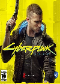
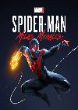
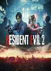

Cyberpunk 2077
Release Date: 10th December 2020
Cyberpunk 2077 is a 2020 action role-playing video game developed and published by CD Projekt. The story takes place in Night City, an open world set in the Cyberpunk universe

Spider-man Miles Morales
Release Date: 12th November 2020
Marvel's Spider-Man: Miles Morales is a 2020 action-adventure game developed by Insomniac Games and published by Sony Interactive Entertainment for the PlayStation 4 and PlayStation 5.

Resident Evil 2
Release Date: 25th January 2019
Resident Evil 2 is a 2019 survival horror game developed and published by Capcom. A remake of the 1998 game of the same name, it was released for Microsoft Windows, PlayStation 4, and Xbox One on January 25, 2019.